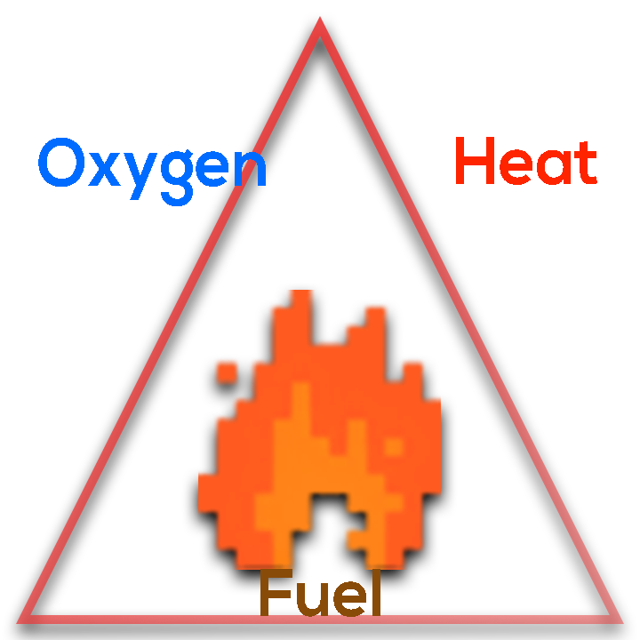

Fire is...
The active principle of burning, characterized by the heat and light of combustion. It is a rapid oxidation process accompanied with the evolution of light and heat of varying intensities.
Three important elements of a Fire
The fire triangle is a basic method for understanding the components of fire. The sides of the triangle speak to the reliant fixings required for fire: heat, fuel and oxygen.
Heat
Heat is answerable for the underlying start of fire, and is additionally expected to keep up the fire and empower it to spread. Warmth permits fire to spread by drying out and preheating close by fuel and warming encompassing air.
Fuel
Fuel is any sort of ignitable material. It's portrayed by its dampness content, size, shape, amount and the plan in which it is spread over the scene. The dampness content decides how effectively it will consume.
Oxygen
Oxygen, most flames require at any rate 16 percent oxygen substance to consume. Oxygen underpins the compound procedures that happen during fire. At the point when fuel consumes, it responds with oxygen from the encompassing air, discharging heat and creating burning items (gases, smoke, coals, and so on.). This procedure is known as oxidation.